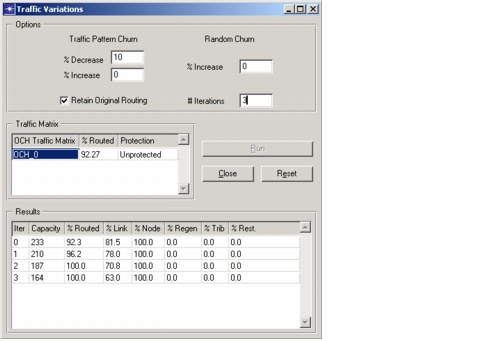

Routing > Traffic Variations
Traffic Variations
You can predict the effect of varying traffic levels on your network, and assess your network's performance for different traffic matrices and protection strategies. This operation does not add resources to the network—it determines how the existing network will handle projected traffic variations.
When it simulates the effects of traffic variations, SP Guru Transport Planner takes node, link, and (for transparent networks) regeneration and tributary capacity into account.
Procedure 6-3 Studying the Effects of Future Traffic Variations
- Choose Design > Traffic Variations.
The Traffic Variations dialog box appears. For information about the options in this window, see Table 6-6-Traffic Variations Options/Fields (Part 1 of 2).
Figure 6-9 Traffic Variations Dialog Box

- Select a routed OCH matrix in the Select Matrix menu.
- Enter the traffic-variation parameters you want in the Input Parameters area and click RUN. To execute a new run, click Reset.
End of Procedure 6-3
| Home © 1987-2007 OPNET Technologies, Inc. All Rights Reserved. This software may be covered by one or more U.S. Patents. See complete patent notice in the Legal Notices section. OPNET Support Center |